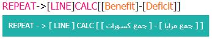
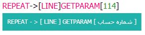
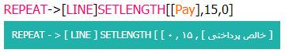
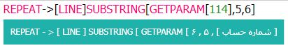
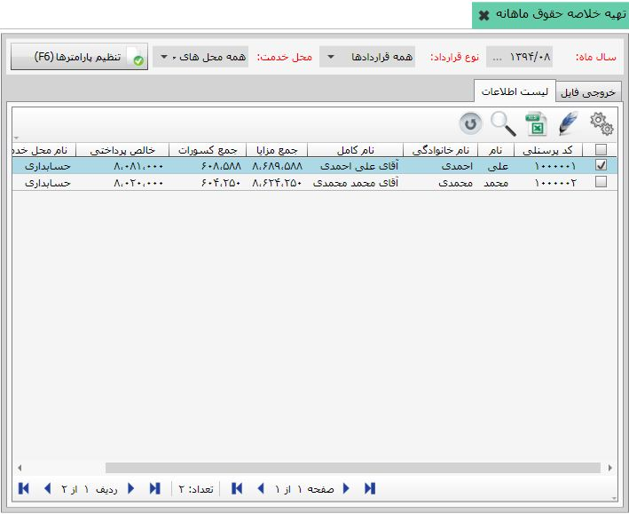

قالب مربوط به این فایل را ذخیره کنید همچنین با استفاده از دکمه
قالب مربوط به این فایل را ذخیره کنید همچنین با استفاده از دکمه
 می توانید قالب ذخیره شده را حذف نمائید.
می توانید قالب ذخیره شده را حذف نمائید.
با کلیک روی منوی « لیست ها و گزارشات» از بخش « مرور و گزارشات» می توانید صفحه مربوط به آن را مشاهده کنید. در این منو می توانید گزارشات کاملی از جمله گزارشات بانک، لیست های حقوق و .... را در دو فرمت TXT و Excel بگیرید. پس از کلیک بر روی این منو صفحه زیر باز می شود :

پس از مشخص کردن سال ماه ، نوع قرارداد و محل خدمت بر روی دکمه تایید و مشاهده کلیک کنید تا صفحه فعال شود.
این منو دارای دو سربرگ« خروجی فایل» و « لیست اطلاعات» می باشد.که در ادامه به توضیح هر کدام می پردازیم.
در سربرگ خروجی فایل، می توانید پارامترهایی که در فایل خروجی نیاز دارید را مشخص کنید شکل زیر این سربرگ را نمایش می دهد:

این سربرگ به بخش های مختلفی تقسیم شده است که در پایین به توضیح هر کدام میپردازیم :
1- در این قسمت شما سال ماه ، نوع قراداد و محل خدمتی که می خواهید از آن گزارش بگیرید را تعیین می کنید پس از وارد کردن این اطلاعات و کلیک بر روی کلید تایید و مشاهده صفحه خروجی فایل فعال می شود.
2- در این قسمت شما باید نوع کدگذاری فایلی خروجی را مشخص کنید.

3- در این قسمت توابعی که برای نوشتن فرمول مربوط به فایل خروجی قرار دارد با استفاده از این توابع می توان ردیف های فایل خروجی را مشخص کرد در ادامه به توضیح هر کدام می پردازیم :
REPEAT-> : این تابع برای تکرار ردیف ها مود استفاده قرار می گیرید مثلا در خروجی بانک یعد مشخص کردن ردیف اول از ردیف دوم به بعد برای نمایش اطلاعات پرسنل در ردیف های جداگانه و پشت سرهم از این ئابع استفاده می شود. شکل زیر مثالی از این تابع را نمایش می دهد :

[LINE] : از این تابع برای مشخص کردن شماره ردیف ها استفاده میشود و معمولا بعد از تابع REPEAT-> مورد استفاده قرار می گیرید.در شکل بالا نمونه ای از این تابع را مشاهده می نمایید.
CALC[] : این تابع برای انجام محاسبات ریاضی مورد استفاده قرار می گیرید.
GETPARAM[] : این تابع برای دریافت مقادیر یک پارامتر مورد استفاده قرار می گیرید مثال زیر این تابع را هنگام دریافت پارامتر شماره حساب نشان میدهد :
SETLENGTH[] : این تابع برای دریافت پارامترهای قرارداد مورد استفاده قرار می گیرد این تابع دارای سه پارامتر می باشد که در شکل زیر نمایش داده شده است :
پارامتر اول مشخص کننده عنوان پارامتر مورد نظر است که در شکل بالا به عنوان مثال پارامتر خالص پرداختی گذاشته شده است.
پارامتر دوم مشخص کننده تعداد ارقام پارامتر اول می باشد.
پارامتر سوم مشخص کننده فیلد تکرار شونده می باشد که در مثال بالا عدد صفر قرار داده شده است.
SUBSTRING[] : در صورتی که نیاز باشد از بین مقادیر یک پارامتر چند رقم و یا حرف در خروجی نمایش داده شود از این پارامتر استفاده می شود شکل زیر مثالی از این پارامتر را نشان می دهد :
در شکل بالاپارامتر شماره حساب برابر با 37826548541 می باشد که پس از اجرای کد این تابع از کاراکتر 5 به بعد به طول 6 کاراکتر یعنی عدد 548541 را در خروجی نمایش می دهد.
COUNT[] : از این تابع شمارش تعداد استفاده می شود به طور مثال در خروجی بانک از این تابع برای نمایش مجموع تعداد ردیف ها استفاده می شود.
SUM : از این تابع برای نشان دادن مجموع چند پارامتر استفاده می شود.
AVRAGE : از این تابع برای محاسبه میانگین استفاده می شود.
4- در قسمت چهارم تمامی پارامتر های قرارداد و تمامی پارامتر های پایه و پرسنلی قرار دارد که می توانید از آن ها در خروجی فایل استفاده کنید.
5- در این قسمت شما می توانید نام فایل خروجی را وارد کنید و با کلیک بر روی دکمه
قالب مربوط به این فایل را ذخیره کنید همچنین با استفاده از دکمه
می توانید قالب ذخیره شده را حذف نمائید.
پس از مشخص کردن پارامترهای خروجی فایل و نوشتن فرمول بر روی دکمه
 ذخیره کلیک کنید تا منوی زیر باز شود :
ذخیره کلیک کنید تا منوی زیر باز شود :

پس از وارد کردن عنوان و فرمت فایل خروجی و تعیین مسیر می توانید از فایل خروجی مورد نظر استفاده کنید.
پس از وارد کردن سال ماه و نوع قرارداد و محل های خدمت و کلیک بر روی دکمه تایید و مشاهده می توانید لیست پرسنلی که می خواهید در سربرگ خروجی فایل از آن ها گزارش تهیه کنید را مشخص نمائید. شکل زیر این صفحه را پس از کلیک بر روی دکمه تایید و مشاهده نمایش می دهد.
